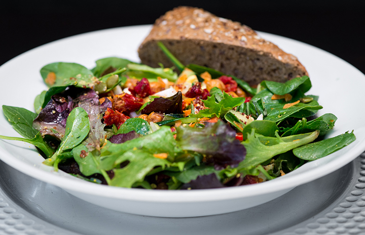

Salad

Whats better then a healthy fresh salad served with a proper meal
When most people think of a salad, the idea that they have is that little salad that comes before your dinner.
Salads can be so much more than that!
Ingredients:
Vegetables:
- 1 cup mixed greens
- 1 cup baby spinach leaves
- ⅓ cup cucumber, sliced
- ⅓ cup carrot, shredded
- ⅓ cup red bell pepper, diced
- 3oz sliced baked or grilled chicken, tofu, salmon or 1 hard-boiled egg
- ¼ cup sundried tomatoes, roughly chopped
- 1 ½ tbsp pepitas (pumpkin seeds)
- 2 tbsp basil leaves, chopped
- ⅓ cup baked chickpeas
Dressing:
- 1 tbsp olive oil
- ½ tbsp lemon juice
- ½ tsp Dijon mustard
- Salt & pepper to taste
Steps:
- Put all your mixed greens and spinach in a large bowl.
- Add in the cucumbers, carrots, bell pepper and tomatoes.
- Put in the protein of your choice.
- Top with the tasty toppings, which are your pumpkin seeds, basil leaves and chickpeas.
- In a separate bowl, place all dressing ingredients and whisk until combined.
- Toss all salad ingredients in a medium bowl.
- Dress and plate your salad.